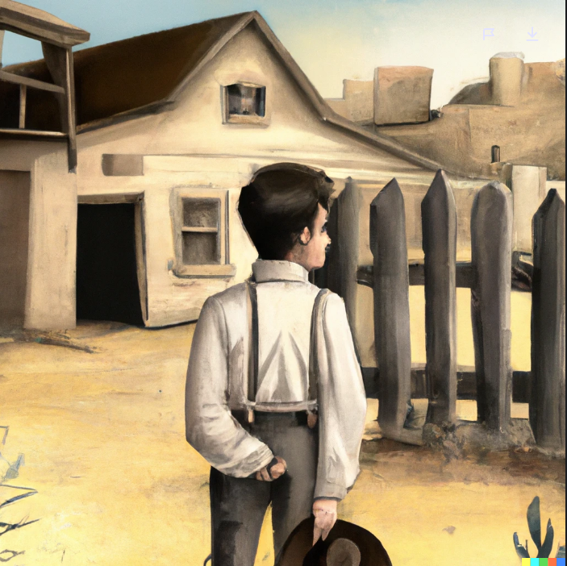
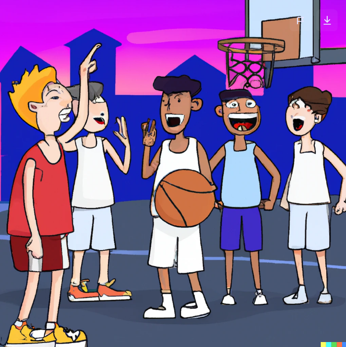
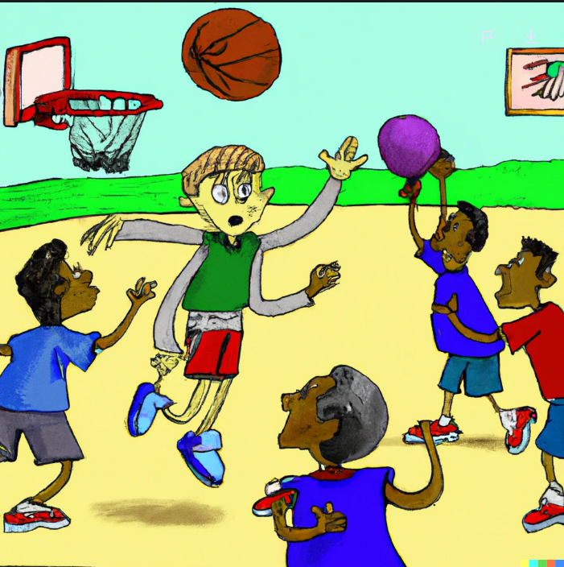

Once there was a lonely boy named Jack who lived in a small town on the outskirts of the
city. Jack's parents were always busy with work, so he spent most of his days alone at home or at school.
Despite being surrounded by people, Jack often felt lonely and isolated.
One day, Jack decided to join the school's basketball team in an effort to make some new friends. At first,
it was tough for Jack to fit in with the other kids, but he worked hard and eventually became a valuable
member of the team.
Through basketball, Jack was able to connect with his teammates and form close friendships. He no longer
felt lonely and isolated, and he began to thrive both on and off the court.
As Jack grew older, he continued to stay connected with his friends and found joy in helping others. He
realized that true happiness comes from within and that having strong connections with others is an
important part of life.